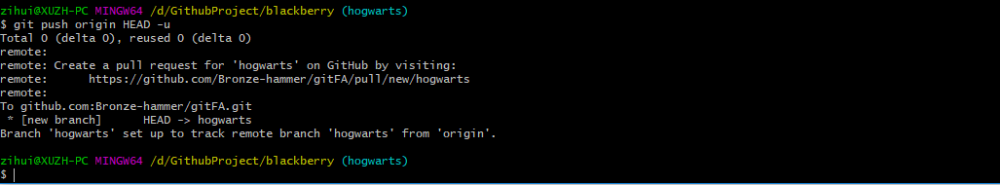
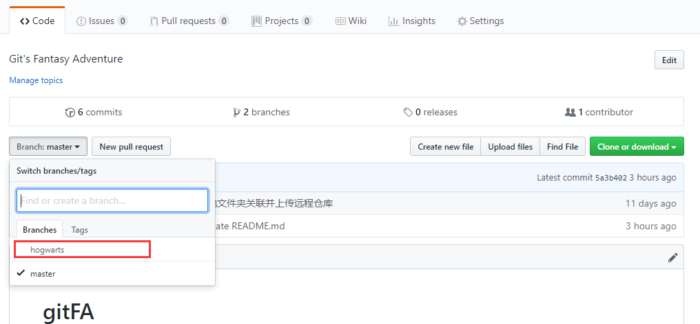

文章摘自网易博客 Git 的origin和master分析，并且也增加了一些内容，大家互相学习。
⚪ git的三大步骤
首先要明确一点，对git的操作是围绕3个大的步骤来展开的（其实几乎所有的SCM都是这样）
- 1.从git取数据（git clone）
- 2.改动代码
- 3.将改动传回git（git push）
这3个步骤又涉及到两个repository，一个是remote repository，在远程服务器上，一个是local repository，在自己工作区上。其中1, 3两个步骤涉及到remote server/remote repository/remote branch，2涉及到local repository/local branch。git clone 会根据你指定的remote server/repository/branch，拷贝一个副本到你本地，再git push之前，你对所有文件的改动都是在你自己本地的local repository来做的，你的改动(local branch)和remote branch是独立（并行）的。
在clone完成之后，Git 会自动为你将此远程仓库命名为origin（origin只相当于一个别名，运行git remote –v或者查看.git/config可以看到origin的含义）(guyue: 即origin是代表远程仓库的一个默认别名, 可以在项目工程目录中.git/config文件中查看或修改)，并下载其中所有的数据，建立一个指向它的master 分支的指针，我们用(远程仓库名)/(分支名) 这样的形式表示远程分支，所以origin/master指向的是一个remote branch（从那个branch我们clone数据到本地），但你无法在本地更改其数据。
同时，Git 会建立一个属于你自己的本地master 分支，它指向的是你刚刚从remote server传到你本地的副本。随着你不断的改动文件，git add, git commit，master的指向会自动移动，你也可以通过merge（fast forward）来移动master的指向。
1 | $ git branch -a (to show all the branches git knows about) |
1 | $ git branch -r (to show remote branches git knows about) |
可以发现，master就是local branch，origin/master是remote branch
（master is a branch in the local repository. remotes/origin/master is a branch named master on the remote named origin）
1 | $ git diff origin/master master |
show me the changes between the remote master branch and my master branch
需要注意的是
remotes/origin/master和origin/master的指向是相同的
1 | $ git diff origin/master remotes/origin/master |
⚪ 关于git push origin master
origin指定了你要push到哪个remote。
master其实是一个“refspec”，正常的“refspec”的形式为”+
1 | $ git push origin master:master |
在local repository中找到名字为master的branch，使用它去更新remote repository下名字为master的branch，如果remote repository下不存在名字是master的branch，那么新建一个。
1 | $ it push origin master |
省略了
1 | $ git push origin master:refs/for/mybranch |
在local repository中找到名字为master的branch，用他去更新remote repository下面名字为mybranch的branch。
1 | $ git push origin HEAD:refs/for/mybranch |
HEAD指向当前工作的branch，master不一定指向当前工作的branch，所以我觉得用HEAD还比master好些。
1 | $ git push origin :mybranch |
再origin repository里面查找mybranch，删除它。用一个空的去更新它，就相当于删除了。
⚪ Git比较本地仓库和远程仓库的差异
假设本地分支为hexo，远程仓库origin的分支为master
首先更新本地的远程分支
1 | $ git fetch origin |
然后我们可以查看一下远程仓库有而本地仓库没有的commit信息
1 | $ git log hexo..origin/master |
最后查看具体文件差异（改动的地方）
1 | $ git diff --stat hexo origin/master |
将远程存储库中的更改合并到当前分支中
1 | $ git pull origin master:hexo |
如果当前分支已经是hexo，那么可以简写成
1 | $ git pull origin master |
在某些场合，Git会自动在本地分支与远程分支之间，建立一种追踪关系(tracking)。比如，在git clone的时候，所有本地分支默认与远程主机的同名分支，建立追踪关系，也就是说，本地的master分支自动”追踪”origin/master分支。
Git允许手动建立追踪关系
1 | $ git branch --set-upstream hexo origin/master |
如果当前分支与远程分支存在追踪关系，git pull 可以简写成
1 | $ git pull origin |
⚪ Git创建新分支并把新分支上传到Github远程仓库
用Git创建一个分支，这个分支在远程仓库上是没有的，把这个新分支推送到远程仓库中。
创建分支并切换到该分支1
$ git checkout -b hogwarts
推送新分支到远程仓库
1 | $ git push origin HEAD -u |

在Github中查看
